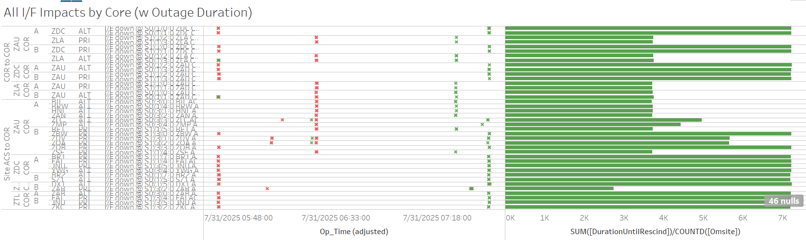

Weekly Highlights 20250730-20250806
7/28 - DX1 Network Tap-B SNMP Restarts
- 7/28 11:09 - DX1 GUS Network Tap-B issued SE 1
SNMP Restart; this SE reccurred about once every
~6hr 6m -- ref LIR
1025899924
- 7/28 17:16 - DX1 GUS Network Tap-B issued SE 1 SNMP Restart
- 7/28 23:23 - DX1 GUS Network Tap-B issued SE 1 SNMP Restart
- 7/29 05:29 - DX1 GUS Network Tap-B issued SE 1 SNMP Restart
- 7/29 11:35 - DX1 GUS Network Tap-B issued SE 1 SNMP Restart
- 7/29 17:14 - DX1 GUS Network Tap-B issued SE 1 SNMP Restart
- 7/30 05:53 - DX1 GUS Network Tap-B issued SE 1 SNMP Restart
7/30-8/6 - POC OAC-A Overtemp
- 7/30 00:23 - POC OAC-A alarmed with SE 231 Overtemp; last event cleared at 7/30 03:43
- 8/6 01:50 - POC OAC-A alarmed with SE 231 Overtemp; SE cleared at 8/6 02:20
7/30 - BRW High Temperatures
- 7/30 03:49 - All BRW WREs alarm with SE 309
Processor Power / Fan Failure due to high
temperatures;
Site tech rpts 100 deg. shelter temp. A/C unit not keeping up.ref LIR 1026935824

- 8/5 - WAAS Second Level provided funds for new AC
7/30-8/6 - L1/L2 Bias Errors
- 7/30 06:22 - YYR L1/L2 Bias Error
- 7/31 02:54 - YYR L1/L2 Bias Error
- 7/31 20:32 - YFB L1/L2 Bias Error
- 8/1 19:15 - YYR L1/L2 Bias Error
- 8/2 02:49 - YYR L1/L2 Bias Error
- 8/3 08:41 - YYR L1/L2 Bias Error
- 8/4 06:13 - YYR L1/L2 Bias Error
- 8/5 03:49 - YYR L1/L2 Bias Error
- 8/5 18:19 - MPR L1/L2 Bias Error
- 8/5 18:19 - MPR Ring 1 comms down hard; line cleared at 8/5 18:32 (~13m 6s)
7/30 - ZLA WRE-A Freq Std Replaced
- 7/30 18:44 - ZLA WRE-A returned to Maintenance
after replacing Freq Std; restored to
Normal at 7/30 21:08
- ZLA WRE-A - 7/19/25-7/30/25 - Freq Std failed -- ref LIR 1020142224
7/30 - MTP WRE Bias Error
- 7/30 21:42 - MTP WRE-A/B SE 729 WRE Bias Error for
all C&Vs
- 7/31 13:41 - MTP WRE-A/C Reset to address WRE Bias Error; both WREs restored to Normal at 7/31 14:18
7/31 - DX1 C1 KPA Replaced
- 7/31 12:59 - DX1 GUS to Maintenance for
replacement of the failed C1 KPA-- ref LIR 1026003624; Control Powered and restored to Backup at 7/31 18:50
7/31 - MMX WREs Reset
- 7/31 17:45 - MMX WRE-C Reset Subsystem to clear bad PIDS; restored to Normal at 7/31 18:25
- 7/31 18:45 - MMX WRE-B Reset Subsystem to clear bad PIDS; restored to Normal at 7/31 19:21
8/1 - AP1 GUS Fault from Primary
- 8/1 21:20 - GUS Switchover - G30
- BR2 to Primary / AP1 GUS Faulted from Primary
with SE 193 C5 KPA Failure due to
High Differential Temperature Alarm - reported that both the Inlet and Differential Temperature meter readings were fluctuating wildly (i.e. unrealistic temperature swings) indicating a likely failure in the inlet temperature sensing or reporting circuitry-- ref LIR 1029251424; swapped in spare C5 KPA, performed TLT Loopback Verification, and restored to Backup at 8/1 23:58 - 8/4 13:50 - GUS Switchover - G30 - AP1 to Primary / BR2 to Backup to avoid double Brewster Primary while dealing with comm issues to Brewster
8/5 - G30-135 GEO went Don't Use -- No Switchover
- 8/5 23:58 - G30-135 GEO went Don't Use due to CCC
trip -- related to KPA:
loose connector on the KPA output of the unit they were repairing last night caused interference; GEO back to the floor after ~2 hours

8/6 - ZDC PCU-A Audible Alarm
- 8/6 00:25 - ZDC WRE-A to Maintenance Mode due to
ATSS advised WAAS OPS that WRE-A PCU is in alarm status-- ref LIR 1031341824; Control Powered and restored to Normal at 8/6 01:08
8/6 - ZHU WRE-C Cabinet Down for Power Work
- 8/6 02:35 - ZHU WRE-C to Maintenance Mode and
Control Powered OFF for
Protective Shutdown for replacing elect transfer switches-- ref LIR 184535121; restored to Normal at 8/6 06:15
Various Comm Impacts
* Only captures major / long-term comm outages
CM1 Comms
- 7/30 16:09 - CM1 Ring 2 PRI comms flapping; last event cleared at 7/30 22:47 (~1163 seconds total)
- 7/31 17:49 - CM1 GUS comms flapping; last event cleared at 7/31 23:00 (~1239 seconds total)
- 8/1 17:01 - CM1 Ring 2 PRI comms flapping; last event cleared at 8/1 21:50 (~335 seconds total)
- 8/4 16:07 - CM1 Ring 2 PRI comms flapping; last event cleared at 8/4 21:39 (~616 seconds total)
- 8/5 17:10 - CM1 Ring 2 PRI comms flapping; last event cleared at 8/5 22:03 (~1049 seconds total)
- 8/6 16:41 - CM1 Ring 2 PRI comms flapping...

MX Sites
- 8/5 03:59 - MTP Ring 1 comms down hard; line cleared at 8/5 04:09 (~9m 57s)
- 8/5 18:19 - MPR Ring 1 comms down hard; line cleared at 8/5 18:32 (~13m 6s)
- 8/6 07:49 - MSD Ring 1 comms down hard; line cleared at 8/6 07:59 (~9m 55s)
Other Sites
- 7/30 21:54 - ZHU Ring 2 ALT comms down hard; line cleared at 7/30 22:06 (~734 seconds)
- 7/31 05:40 - Multiple comms impacted due to
MR-205461 || ZAU<->MULT. L3H Techs onsite to transition from C15454 to FW9500; centered at ZAU but affecting comms to ZLA and ZDC as well -- ref LIR 1020158924; all comms restored by 7/31 07:41 (~7232 seconds)- 7/31 05:40 - BR1 GUS lost comm -- SE 738 CV-GUS Comm Fail, rescinded after 12 seconds; No Switchover even though BR1 in Primary...

- 8/3 06:22 - ZLA-ZTL Ring 2 PRI comms down hard; line cleared at 8/3 07:31 (~4155 seconds)
- 8/4 19:00 - BIL Ring 1 PRI / Ring 2 ALT comms down hard; both lines cleared at 8/4 19:01 (~111 seconds)
- 8/5 05:11 - YQX Ring 1 PRI comms flapping; last event cleared at 8/5 06:09 (~108 seconds total)
- 8/6 08:39 - OTZ Ring 2 PRI comms down hard; line cleared at 8/6 08:41 (~130 seconds)
- 8/6 08:53 - BRW Ring 1 PRI / Ring 2 ALT + BET Ring 1 PRI / Ring 2 ALT comms took a ~35 second hit
- 8/6 08:57 - OTZ Ring 2 PRI comms down hard; line cleared at 8/6 09:22 (~1510 seconds)
- 8/6 10:17 - SZ1 Ring 1 PRI / Ring 2 ALT comms flapping; last event cleared at 8/6 17:23 (~2651 seconds total)
7/21/25 YYR Ring 1 Comms
- 7/21 11:44 - YYR Ring 1 comms flapping with extended outages... -- ref LIR 1020579524
- 7/21 14:50 - YYR Ring 1 comms down hard...
6/25/25 OTZ Ring 1 ALT Comms
- 6/25 18:35 - OTZ Ring 1 ALT comms down
hard...
ISR 0625-3787-- ref LIR 1004589824
6/25/25 Brewster Comms Down Hard...
- 6/25 09:09 - BR1 Ring 1 ALT / Ring 2 PRI + BR2 Ring 1 ALT / Ring 2 PRI comms down hard...
- Targeting new circuit implementation on 7/22..
11/6/24 YFB Ring 2 Down Hard...
YFB requires satcom upgrades by NavCanada to restore... ref LIR 892056924
- 11/6/24 18:48 - YFB Ring 2 down hard... both rings to YFB down hard...
5/11/23 Mexico Ring 2 Down Hard...
- 5/11/23 17:01 - MX Ring 2 SatCom upgrade begins; MX Ring 2 OFFLINE until upgrade troubleshooting is complete...
- Targeting network upgrade in CY26
List of current offline WREs
List of current offline WREs -- ref WAAS Status Monitor
All Depot shipments to Mexico are halted until the customs process can be finalized
Currently working to assess MX Inventory to determine equipment refresh and restoration needs...
- YYR WRE-B - 7/4/25-... - Freq Std failed -- ref LIR 1010395424
- MMD WRE-A - 3/31/25-... - Freq Std failed -- ref LIR 953873324
- MTP WRE-B - 11/18/24-... - Receiver inits failing -- ref LIR 898330924
- MMX WRE-A - 10/13/24-... - Freq Std failed -- ref LAD 879853824
- MPR WRE-B - 5/3/24-... - Inits failing -- looks like a bad freq std; due to shipping issues, there is no spare Freq Std and no ETA to recover WRE-B... -- ref LIR 44170821

Major Events


Core I/F Status

Comm Events

Mexico Comm Status